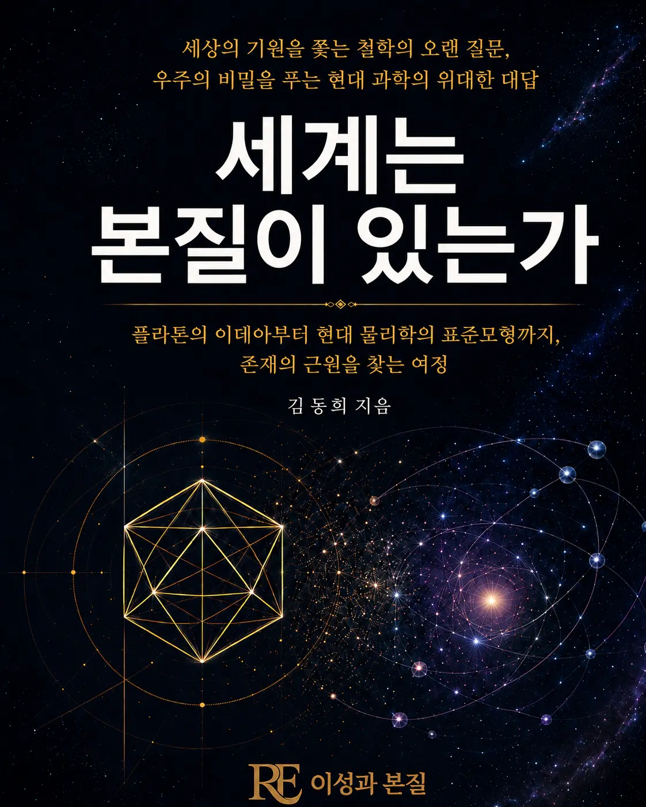

세상의 기원을 쫓는 철학의 오랜 질문과, 우주의 비밀을 푸는 현대 과학의 대답. 플라톤의 이데아부터 현대 물리학의 표준모형까지, 존재의 근원을 찾는 여정.
출간일 2026-08-12
기획 의도
플라톤의 이데아부터 표준모형까지, '세계에는 변치 않는 본질이 있는가'라는 질문은 철학과 과학 모두의 오랜 화두였습니다. 이 책은 이 질문을 따라 고대 형이상학과 현대 물리학을 나란히 놓고, 존재의 근원을 다시 묻습니다.
예상 독자
철학과 과학의 접점에 관심 있는 독자, 형이상학 입문서를 찾는 독자.
목차
1부. 본질을 꿈꾸다
- 1장 같은 질문, 다른 답들
- 2장 플라톤의 본질주의
- 3장 본질주의의 근원으로서 탈레스
- 4장 아리스토텔레스의 다원적 본질주의
- 5장 본질주의와 기독교, 그리고 보편자 논쟁
- 6장 본질은 없다는 반론
- 7장 본질은 어디에 있는가
2부. 본질을 탐구하다
- 8장 자연이 끝까지 손을 잡아준 단 하나의 이론
- 9장 우리는 표준모형에서 멈출지도 모른다
- 10장 솟아나는 것들, 여럿이 된 본질
- 11장 회색지대, 어디까지가 본질인가
- 12장 중심 없는 질서, 본질 없이 태어나는 것들
- 13장 그래도 모든 전자는 똑같다
- 14장 마지막 꿈, 그리고 아직 오지 않은 증명
- 15장 모든 것의 이론은 모든 것을 설명하는가
3부. 본질을 묻다
- 16장 실존은 본질에 앞선다
- 17장 타인의 얼굴은 규정을 거부한다
- 18장 말놀이에는 규칙만 있고 본질은 없다
- 19장 구조는 본질의 자리를 옮겼을 뿐이다
- 20장 지식은 하나의 진리를 향하는가
- 21장 과학은 하나를 향하는가 여럿을 인정하는가
도서목록으로 돌아가기